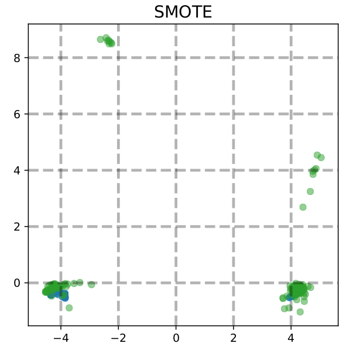

Porosity is one of the major defects found in metal casting components, that needs to be controlled in order to produce good quality metal cast components. Alleviating the porosity level below a certain threshold requires substantial knowledge of the entire casting process. The goal of this research is to utilize Machine Learning for the purpose of quality assurance in metal casting processes. The main aim is to make predictions about whether a certain cast component would pass or fail the quality test, given certain parameters and conditions. One of the major tasks for the quality assurance of metal casting process is to identify the most important parameters in the process, that are responsible for porosity control, and ultimately, the quality of the metal cast component. This project aims to identify these features, so that they can be closely monitored during the casting process in order to get good quality products. Linear and non-linear techniques including PCA and Autoencoders are used for dimensionality reduction. This problem is categorized as a semi supervised machine learning problem, with the response being sparse as compared to the predictors. Dealing with highly unbalanced datasets is a major challenge in the field of machine learning because of the poor performance of machine learning algorithms on such datasets. Dataset balancing techniques such as Random over and under sampling, SMOTE and its variations are extensively used in this research, to balance the data, before implementing the algorithms. In addition to the well known algorithms including Random Forests, SVC and KNN, variations of ensemble learning are used for classification, owing to the robustness and improved classification performance of these techniques. Lastly, different classifier performance evaluation metrics used for unbalanced datasets, including confusion matrices and AUROC are comprehensively used in this research, to compare the performance of different algorithms and balancing techniques.